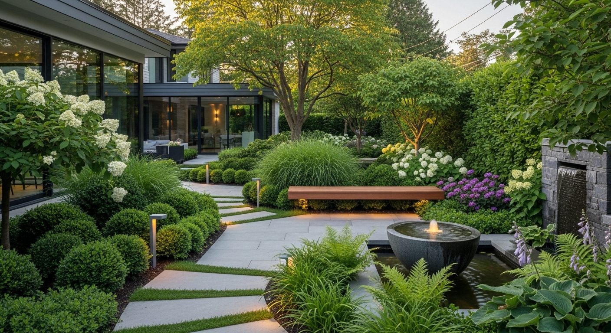
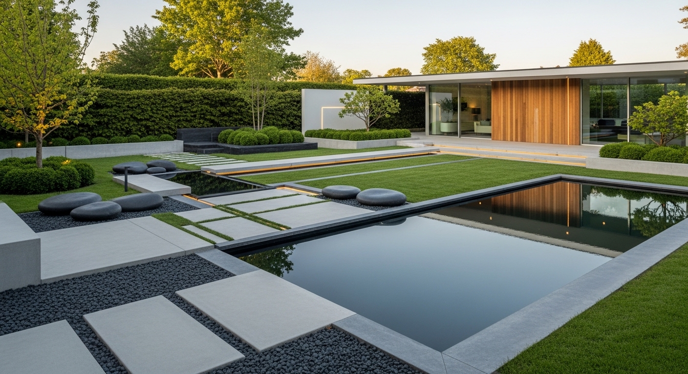
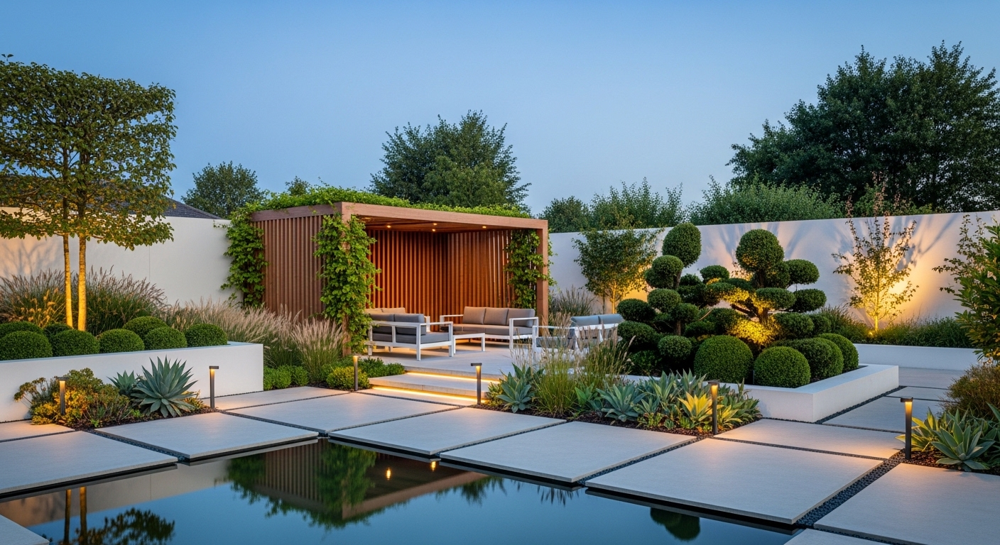
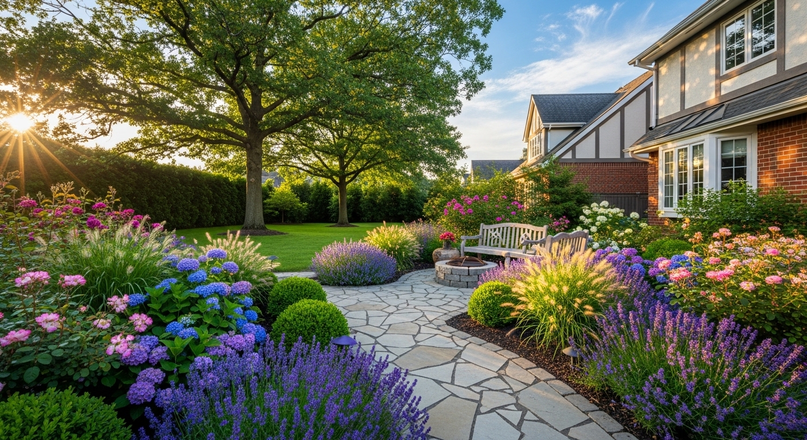
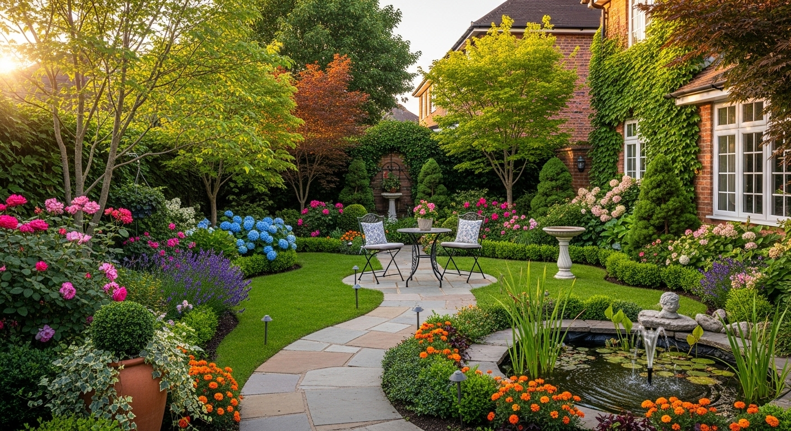
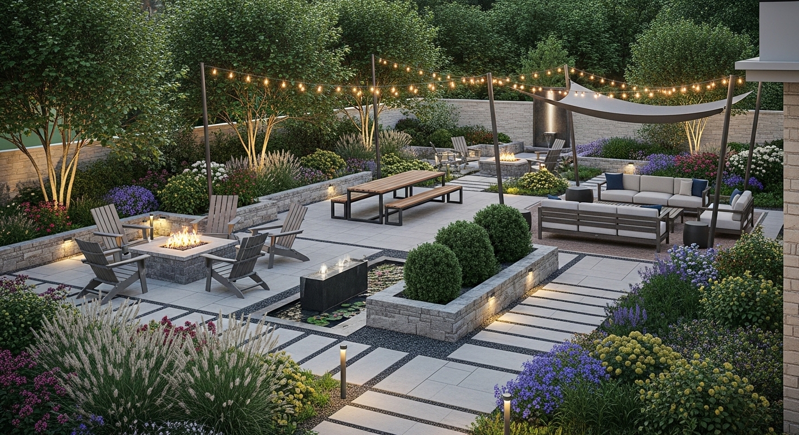
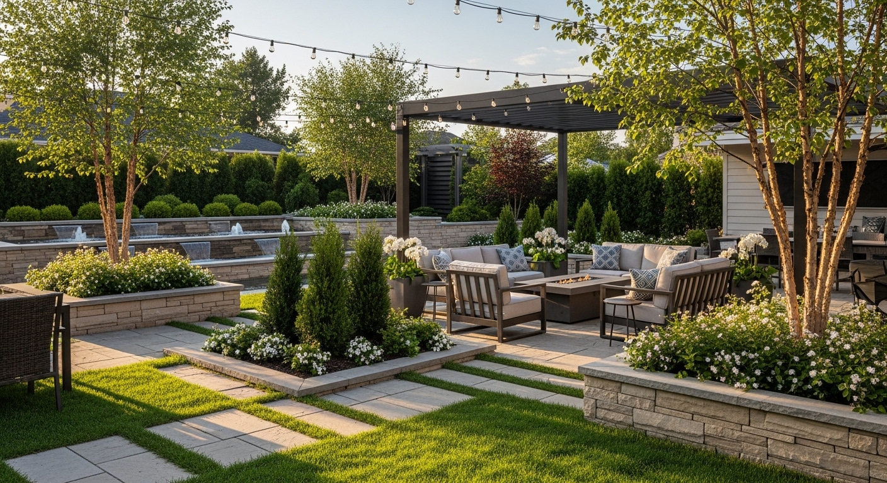
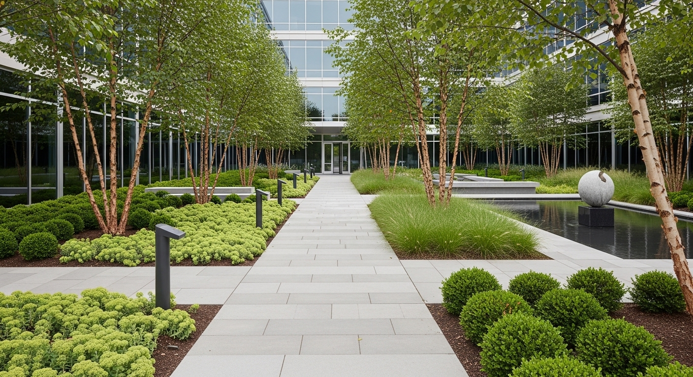

Projetos de Jardins
Serviço de criação de jardins sob medida, com levantamento do espaço, seleção de espécies adequadas ao clima e solo, e entrega de projeto executivo com plantas e especificações.
Projetos de Jardins
Levantamento e análise do terreno
Antes de qualquer traçado, nossa equipe visita o espaço, analisa o solo, a incidência solar e a topografia. Esse diagnóstico preciso é o que garante que cada espécie escolhida prospere onde foi plantada — e que o projeto resista ao tempo.


Projeto executivo em 2D/3D
Transformamos sua visão em plantas técnicas detalhadas com especificações de espécies, materiais e pontos de irrigação. A visualização em 3D permite que você aprove cada detalhe antes da primeira mudança ser plantada — sem surpresas na entrega.


Seleção de espécies nativas e exóticas
Nossa curadoria botânica equilibra beleza, clima e manutenção. Priorizamos espécies nativas do cerrado e da mata atlântica, combinadas estrategicamente com exóticas de alto impacto visual. O resultado é um jardim que se torna mais belo a cada estação.

Implantação e acompanhamento
Nossa equipe executa plantio, drenagem, revestimentos e iluminação com supervisão técnica do início ao fim. Após a entrega, acompanhamos o pegamento das espécies e realizamos os ajustes necessários para que o jardim evolua conforme o projeto.


Residencial, comercial e corporativo
Da varanda de um apartamento ao jardim de um condomínio de luxo, do pátio de um escritório ao campus corporativo — a GIDE Paisagismo assina projetos que elevam o valor e a experiência de qualquer escala.
Jardim Residencial & Moderno
{kind=link}
{kind=link}
{kind=link}
{kind=link}
{kind=link}
{kind=link}
{kind=link}
{kind=link}
{kind=link}
{kind=link}
Cada jardim conta uma história única.